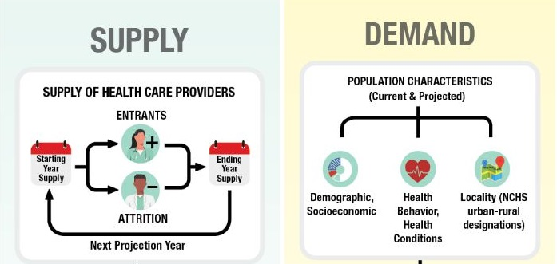
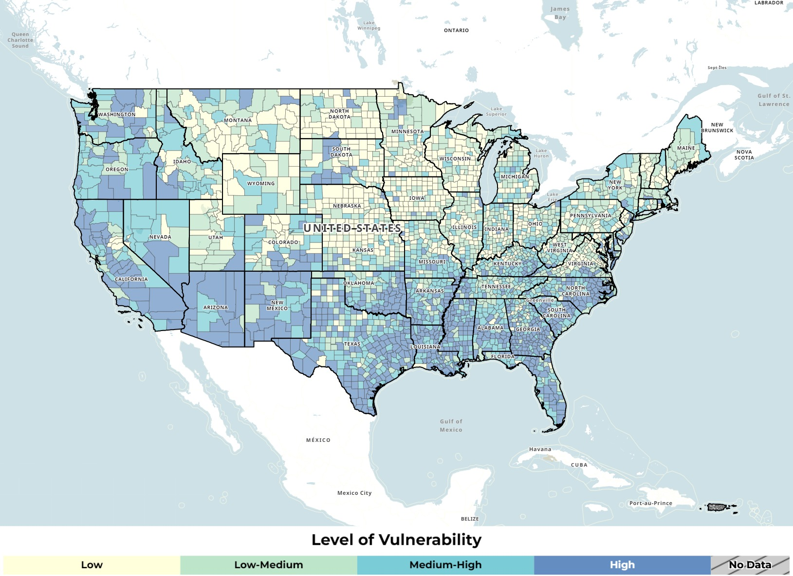

I. Equitable Hospital Sites Identification Methodology
Inequalities in Access to Health Services in America
Largely there are geographic and economic factors that cause inequalities in access to health services throughout the United states. First, residents in rural areas often experience barriers to health services due to travel distances and medical workforce shortages. As of September 2022, 65.6% of Primary Care Health Professional Shortage Areas were located in rural areas. Second, lower-income Americans are less likely to have health insurance coverage and therefore lose the chance to prevent serious diseases. The rate of avoidable hospital conditions(AHC), hospitalization avoidable through timely and quality primary and preventive care, is particularly high with lower-income minorities. So how do I avoid these systematic inequalities in creating hospital sites selection tools?

Inequalities in the current demand estimate model for health services
HRSA(Health Resources & Services Administration) runs The Health Workforce Simulation Model(HWSM) to estimate the current and the future demand for health care. Projections of demand from HWSM inform policies to provide adequate supply of health care workers at the national, state, and local levels. The problem is that the current estimate model heavily relies on medical insurance data and leaves out the uninsured population. Those people with higher-income are more likely to have regular physical examinations with medical insurance and therefore documented in the database as medical demand. If the hospital site selection process depends on such databases, then the system will make the current medical inequality worse. Are there alternative ways leveraging computational methods to equitably estimate population in medical needs which include uninsured and left out minorities in the current biased model?
Hospital Sites Selection Precedents
The Department of Geography at Michigan State University has done research on the hospital site selection process for the state of Michigan. As many medical studies suggest that the 30 minutes threshold is critical for the survival of patients, the research concentrated on identifying populations with long drive times to existing community hospitals. Areas falling outside of the 30 minutes threshold are identified as limited access areas, which now inform state policy in evaluation of new local hospital proposals. The research points out geographic inequality in access to health services, but it does not mention low-income groups without health insurance and racial or ethnic minorities.

New Audiences in Reduced Barrier Scenario
- Policy makers pursuing equity in health services
- Uninsured patients
- Medicaid recipients
With recent initiatives such as Healthy People 2030 by the US government, national and state goals are to remove barriers that contribute to inequities in use of health services. This will greatly affect medical demand estimates from the Medical Expenditure Panel Survey(MEPS) data. The equitable hospital site identification research will include the vulnerables such as uninsured patients and medicaid recipients based on the new demand from reduced barrier scenario.
Datasets to address current medical inequalities
-
current distribution of hospitals in the US

- Social Vulnerability Index (SVI) uses 16 U.S. census variables(age, race, employment, education, etc) to help local officials identify communities that may need support before, during, or after disasters. 
- Years of Potential Life Lost (YPLL) represents community-specific health vulnerability in the United States by measuring rates of premature death
- Medicaid Enrollment provides free health insurance for low-income adults and children. The enrollment eligibility depends on income, disability, and employment status.
- Avoidable Hospital Conditions (AHC) is inpatient stays that evidence suggests may be avoidable through timely and quality primary and preventive care. The rate of hospital discharges for AHC is used to represent inequality in some research.
Above datasets can be used to pinpoint the most vulnerable site for future hospital proposals with equity. Besides these data, I plan to further research on the new equitable medical demand estimate methodology from HRSA (Health Resources & Services Administration).